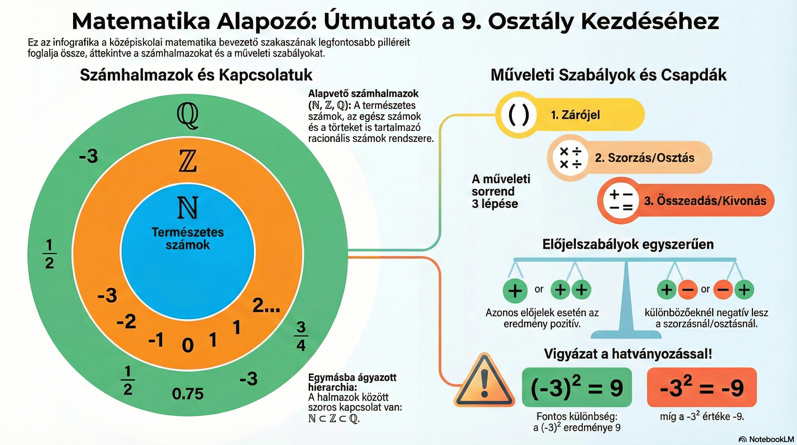
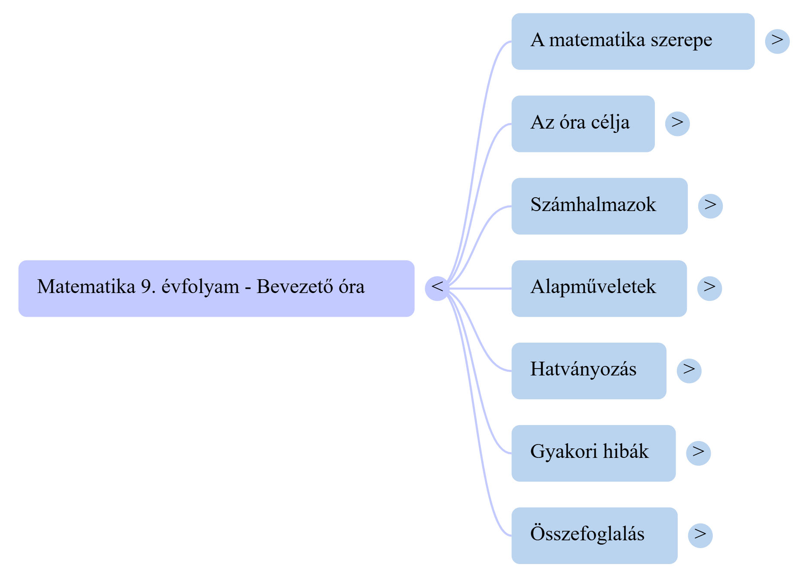

Hogyan készülhet ugyanabból a tananyagból jegyzet, infografika, gondolattérkép, videó és hanganyag?
A kapott példában a kiindulópont egy 9. évfolyamos matematika bevezető óra jegyzete.
A jegyzet fő témái:
A kapott anyag azt mutatja be, hogy ugyanazt a forrást többféle tanulási segédanyaggá lehet alakítani.
Rövid, szöveges összefoglaló a tananyag fő pontjaival.
Egyetlen képen rendezi el a számhalmazokat, műveleti szabályokat és gyakori csapdákat.
A témák kapcsolatát és a tananyag szerkezetét mutatja meg.
A matematika bevezető témáit több, egymásra épülő oldalon foglalja össze.
A tananyag mozgóképes feldolgozása.
A tananyag meghallgatható formában is rendelkezésre áll.

Figyeld meg:
(-3)² és a -3²

A gondolattérkép középpontjában a Matematika 9. évfolyam – Bevezető óra áll, és innen ágaznak el a fő témák: a matematika szerepe, az óra célja, számhalmazok, alapműveletek, hatványozás, gyakori hibák és összefoglalás.
A kapott PDF 12 oldalon dolgozza fel a matematika bevezető témáit. A számhalmazoktól és alapműveletektől a műveleti sorrenden és hatványozáson át a gyakori hibákig jut el.
PDF megnyitásaMegfigyelési feladat: nézd meg, mely témákat emeli ki a videó az eredeti jegyzetből, majd vesd össze a jegyzettel!
Hallgatási feladat: jegyezz fel három olyan gondolatot, amely az eredeti jegyzetben is szerepel, és egy olyat, amelyet a hanganyag különösen hangsúlyosan mutat be!
Mi volt a kapott NotebookLM-példa kiinduló tananyaga?
Sorolj fel legalább négy különböző segédanyag-formát, amely a csomagban szerepel!
Miben más egy infografika és egy gondolattérkép?
Melyik segédanyag lenne számodra a leghasznosabb egy dolgozat előtti ismétléshez? Indokold meg!
Miért érdemes ugyanazt a témát többféle formában is áttekinteni?
{kind=link}
{kind=link}